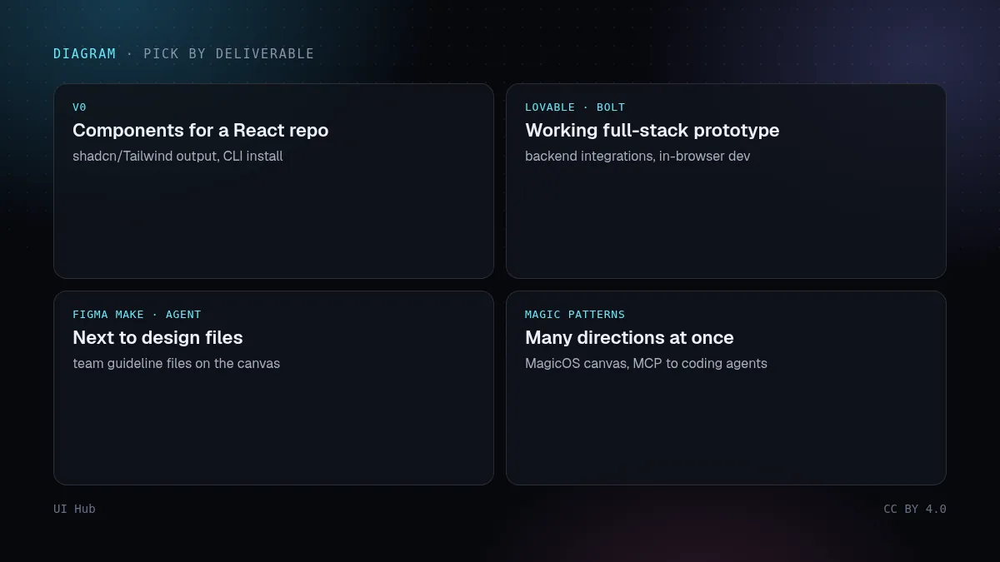
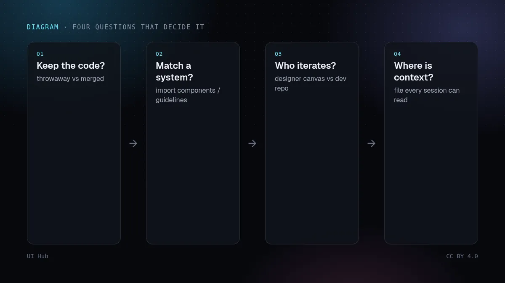
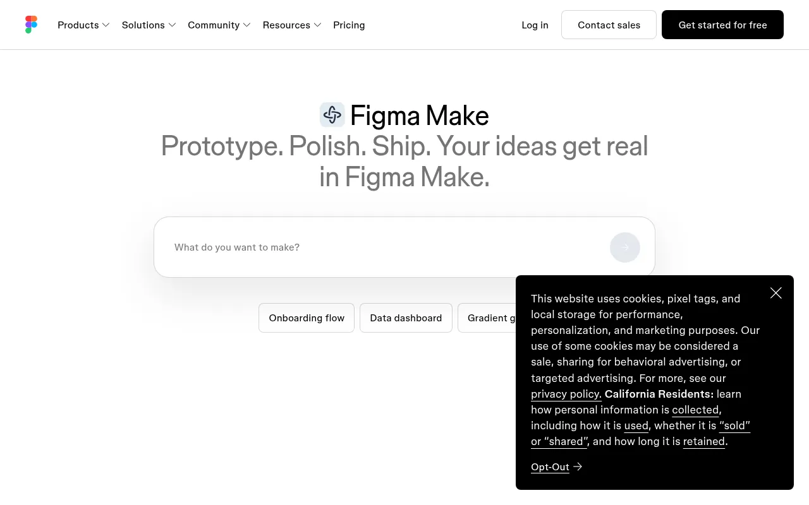

五个工具都能把文字变成界面，但它们是为不同的活设计的。比「谁生成得好看」并不可靠，因为效果主要取决于你的提示。应该比它们产出什么、产出去哪里。

决策网格：哪种交付物用哪个工具 · 示意图：UI Hub 原创，CC BY 4.0
按交付物选
- 给现有 React 代码库的组件：v0（产出 shadcn/Tailwind 代码，可用 CLI 安装）。
- 能跑的全栈原型：Lovable 或 Bolt（有后端集成，Bolt 在浏览器里跑开发环境）。
- 紧挨设计稿的原型：Figma Make；要在画布上按团队规范修改，用 Figma 智能体。
- 产品团队多方向探索：Magic Patterns，现在有 MagicOS 画布和给编程智能体用的 MCP 服务。

决策流程：留不留代码、匹不匹配系统、谁迭代、上下文在哪 · 示意图：UI Hub 原创，CC BY 4.0
决定选择的几个问题
- 工程师会保留这些代码，还是用完即弃？
- 需要匹配现有设计系统吗？（看工具能否导入组件或规范文件。）
- 谁来迭代：画布上的设计师，还是仓库里的开发者？
- 设计上下文放在哪里，每个队友的会话都能读到吗？

Figma Make 页面，五个对比工具之一 · 截图：Figma（www.figma.com），2026-10-14 截取，版权归原站所有我们的看法
2026 年这五个工具的趋势一致：持久的上下文（规范文件、设计系统、MCP）比花哨的提示词更重要。选上下文机制最适合你团队的那个，然后把功夫花在那份文件上。价格和额度经常变，请以各家当前官网为准，任何对比表（包括我们这张）都不如官网可靠。